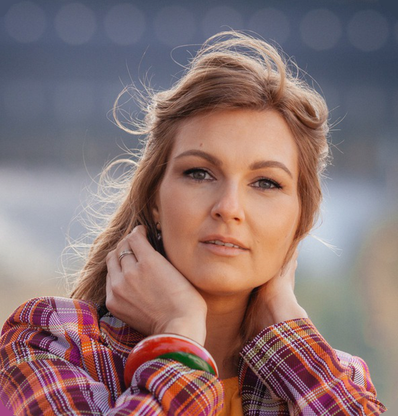
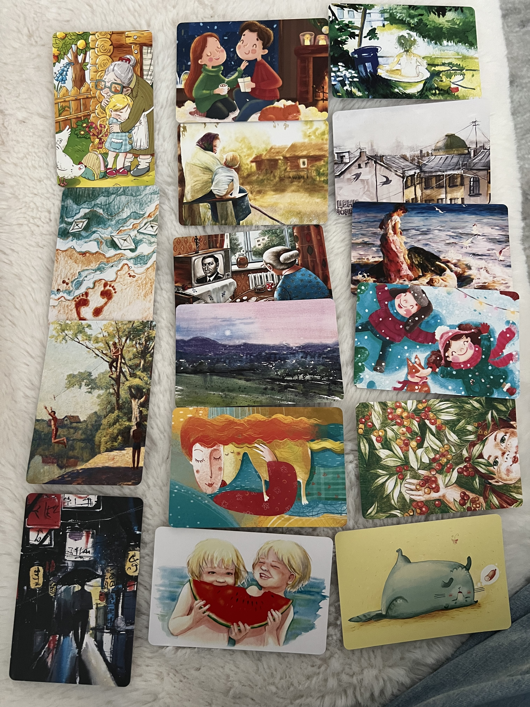
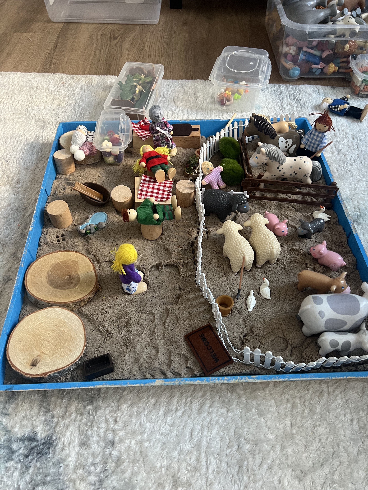
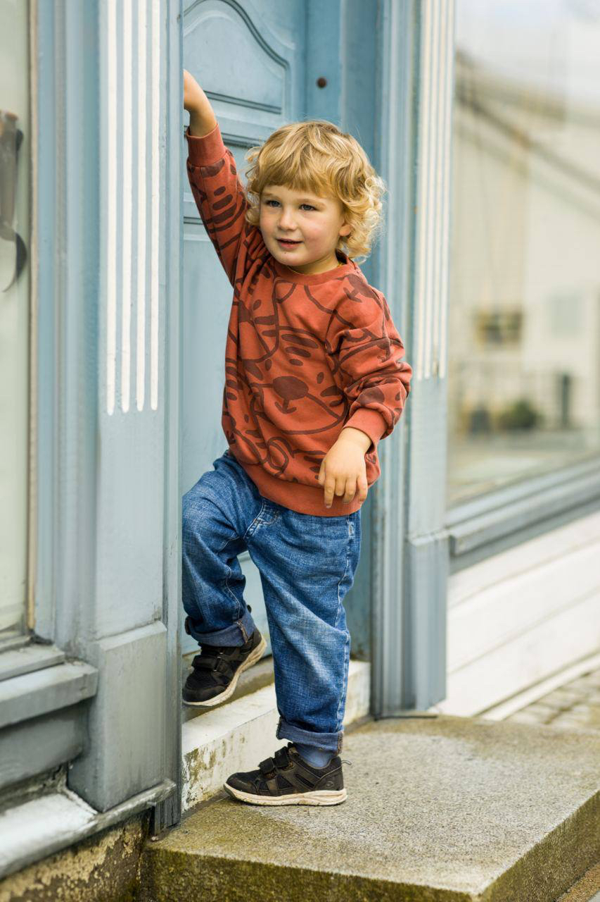
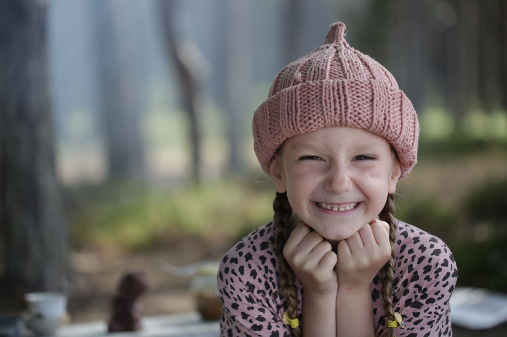
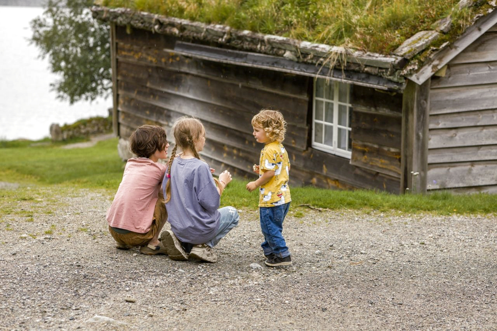

Понимание и
гармония
психолог для детей родителей

Меня зовут
Марина Ястребова
Меня зовут Марина Ястребова. Я детский и подростковый психолог.
Уже 18 лет я работаю с детьми, подростками и их семьями. Основная часть моей практики — индивидуальные встречи с детьми, а работа с родителями помогает лучше понимать, что стоит за трудностями ребёнка.
Последние три года я живу в Амстердаме, где веду частную практику. Принимаю очно и онлайн
Я мама троих детей. В работе для меня важно видеть не только трудности, но прежде всего самого ребёнка — его особенности, возможности и внутренний мир.
Образование
2005
2022
2022
2023
2023
2023
2023
Опыт работы
2005
2003
2008
2020
Специализация
- Эмоциональные расстройства - тревожность, депрессия, страхи, ОКР, фобии, навязчивые мысли и сопровождение детей и подростков с СДВГ
- Проблемы поведения и саморегуляции - агрессия, капризы, непослушание, трудности с управлением эмоциями
- Развитие, обучение и социализация - трудности в учёбе, общении и адаптации в коллективе
- Семейные ситуации и отношения - развод родителей, сиблинговые конфликты, вопросы воспитания
- Самооценка и психосоматика - неуверенность в себе, психосоматические расстройства, адаптация


Методы работы
Я придерживаюсь интегративного мультимодального подхода, сочетая методы разных направлений.
Это позволяет подобрать именно тот формат, который подходит вашему ребёнку и вашей семье.
В своей практике я использую:
- Игровые формы и арт-терапию
- Песочную терапию
- Психоанализ
- Когнитивно-поведенческое направление (СБТ)
- Психодраму
Такой подход помогает учитывать возрастные и личные особенности ребёнка, динамику семьи и глубину вашего запроса.
С родителями я провожу консультации, где мы подробно разбираем ситуацию и ищем шаги для поддержки ребёнка.
По отдельному запросу я также работаю со взрослыми в формате индивидуальной терапии детско-родительских отношений.
Форматы работы
С родителями
Первая встреча проходит без ребёнка и длится 90 минут.
Важно присутствие обоих родителей: это помогает услышать разные взгляды, собрать полную картину и выстроить единый план работы.
Мы обсуждаем запрос, историю развития ребёнка и особенности семейной ситуации.
В дальнейшем встречи с родителями проводятся регулярно по ходу работы над запросом — это помогает обсуждать динамику, поддерживать изменения и находить решения вместе.
Грамотно выстроенная терапия и психокоррекция помогают преодолеть сложности, стать более уверенным и счастливым.
Семья вместе
Совместные встречи родителя и ребёнка, а также расширенные семейные встречи (90 минут), когда важно услышать всех участников.
Такой формат помогает наладить контакт, прожить эмоции и укрепить отношения в семье.
С детьми и подростками
На индивидуальных встречах я помогаю детям и подросткам выражать чувства, справляться с трудностями и находить новые способы взаимодействия с миром — через игру, творчество и доверительный разговор.



Услуги и цены
Установочная консультация
Короткая встреча-знакомство, чтобы обсудить как строится процесс, задать волнующие вопросы касательно работы над запросом и понять, подходит ли вам дальнейшее сотрудничество
Бесплатно
20 минут
Первая консультация для родителей
Мы подробно обсуждаем ваш запрос, историю развития и здоровья ребенка, а также особенности семейной ситуации.
Важно присутствие обоих родителей — это помогает собрать полную картину и наметить план дальнейшей работы.
150€
90 минут
Индивидуальная сессия
С ребенком или родителем
105€
60 минут
Расширенная встреча
Семейная встреча родители/дети, Встреча по запросу.
150€
90 минут
Пакеты встреч для регулярной работы
4 сессии
60 минут
5 недель
385€
10 сессии
60 минут
12 недель
900€
Частые вопросы
С детьми какого возраста вы работаете?
Я работаю с детьми и подростками от 3 до 18 лет.
При этом важно понимать, что особенности развития и поведения маленьких детей во многом корректируются через работу с родителями. Поэтому мои самые маленькие клиенты, которые приходят на индивидуальные встречи, обычно находятся в возрасте около 4,5–5 лет.
С детьми младшего возраста работа чаще всего строится через родителей или совместно с родителями.
С чего начинается работа?
Работа начинается с консультации с родителями.
На первой встрече мы подробно обсуждаем ваш запрос, собираем анамнез, говорим об истории развития ребенка, особенностях семьи и том контексте, в котором он растет. Это помогает увидеть ситуацию целиком и выбрать наиболее подходящий формат дальнейшей работы.
Почему на первую консультацию нужны оба родителя?
Я всегда стараюсь привлекать к работе всех взрослых, которые непосредственно участвуют в воспитании ребенка.
Для меня важно услышать не только родителя, который обратился за помощью, но и второго родителя. У каждого есть свое понимание ситуации, свои взгляды на воспитание, свои наблюдения. Это позволяет собрать более полную картину и найти общее направление работы.
Кроме того, мне важно, чтобы оба родителя понимали, что происходит в процессе терапии, какие задачи мы решаем и каким образом каждый из них может поддержать изменения дома.
Нужно ли родителям присутствовать на сессиях ребёнка?
Да, но не всегда.
В моей практике есть семейные сессии, в которых участвует вся семья. Они помогают увидеть, как строится взаимодействие между членами семьи: как родители общаются с ребенком, как дети взаимодействуют друг с другом, как ребенок реагирует на каждого из родителей.
При этом на индивидуальных встречах с ребенком родители обычно не присутствуют.
Это связано не с тем, что родители как-то негативно влияют на ребенка. Просто поведение ребенка естественным образом меняется в присутствии значимого взрослого. Когда ребенок остается один на один со специалистом, ему легче проявлять себя свободно, а психолог получает возможность лучше увидеть его особенности и внутренний мир.
Как часто проходят встречи и сколько длится работа?
Если речь идет о психологической работе с эмоциональными трудностями, встречи обычно проходят один раз в неделю.
Если проводится нейропсихологическая коррекция совместно с нейропсихологом или специалистом по сенсорной интеграции, занятия проходят два раза в неделю. Такая работа больше похожа на тренировку определенных функций и навыков, поэтому ей необходима регулярность.
Чтобы познакомиться с ребенком, установить контакт, провести диагностику и дать родителям содержательную обратную связь с рекомендациями, обычно требуется около четырех встреч.
После этого мы вместе принимаем решение о дальнейшей работе.
Если задача носит консультационный характер, этих четырех встреч может быть достаточно. Если речь идет о глубокой терапевтической работе, она может продолжаться столько, сколько требует запрос ребенка и семьи.
Нейропсихологическая программа обычно рассчитана минимум на 8 месяцев.
Что делать, если ребёнок не хочет идти к психологу?
Причины могут быть самыми разными.
Иногда ребенок уже имел неприятный опыт общения со специалистом. Иногда он представляет работу психолога как место, где его будут заставлять говорить о неприятном или оценивать. Бывает и так, что ребенок слышал от других детей негативные представления о психологах.
Как правило, уже после первой встречи детям становится понятно, как устроена работа. Они видят, что терапия строится на доверии, уважении и контакте, а не на принуждении.
С маленькими детьми мы очень много играем, поэтому для них встречи становятся естественным и интересным процессом.
Если же после двух-трех встреч ребенок по-прежнему категорически не хочет приходить, важно разобраться в причине. Возможно, сейчас не самое подходящее время для такой работы. А иногда просто не сложился личный контакт именно с этим специалистом.
Это совершенно нормально. Контакт между психологом и ребенком — один из важнейших факторов эффективности терапии. Если ребенок не чувствует себя рядом со специалистом достаточно комфортно, можно попросить рекомендации и подобрать другого психолога.
С какими запросами вы работаете?
Я работаю с широким кругом детских и подростковых запросов, среди которых:
- тревожность, страхи и эмоциональные трудности;
- самооценка и неуверенность в себе;
- сложности общения со сверстниками;
- адаптация к эмиграции;
- семейные конфликты;
- отношения между братьями и сестрами;
- переживание развода родителей;
- подростковые кризисы;
- СДВГ;
- трудности внимания и саморегуляции;
- агрессия;
- нарушения сна;
- эмоциональная нестабильность;
- вопросы детско-родительских отношений.
Если вы не нашли свой запрос в этом списке, вы всегда можете написать мне — мы вместе обсудим вашу ситуацию.
Соблюдается ли конфиденциальность?
Да, безусловно.
Вся информация, полученная во время работы, является конфиденциальной.
Материалы, которые появляются в процессе работы с ребенком и семьей, используются исключительно для анализа и сопровождения вашего случая.
При необходимости они могут обсуждаться с коллегами только в профессиональных целях и только для повышения качества помощи ребенку.
Если какие-либо материалы используются в образовательных целях или для публикаций в социальных сетях, это всегда происходит только с письменного согласия родителей.
Как записаться на консультацию?
Записаться можно, написав мне в WhatsApp или Telegram.
Я отвечу на ваши вопросы, помогу подобрать удобное время и расскажу, какой формат работы подойдет именно в вашей ситуации.
Записаться на консультацию